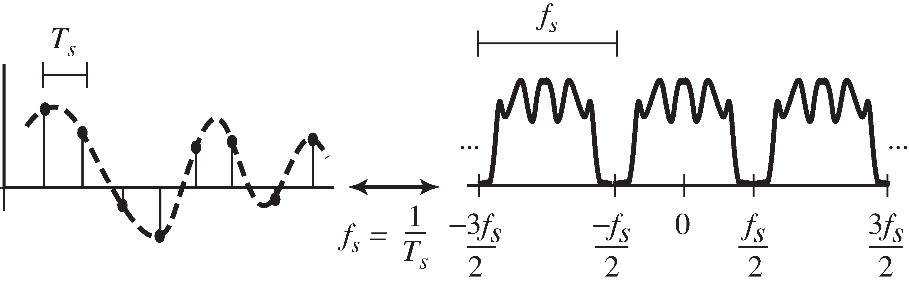
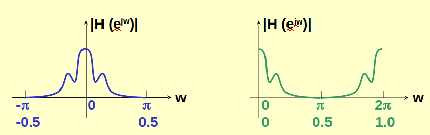
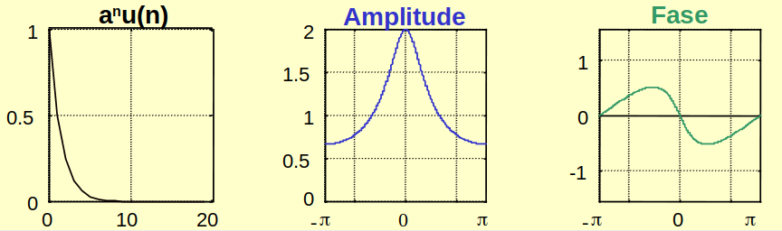
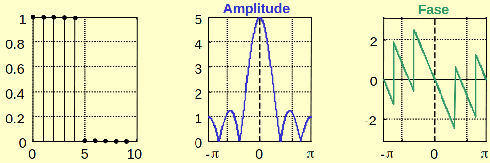
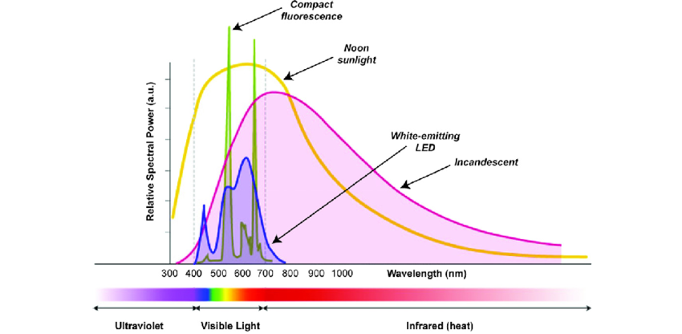
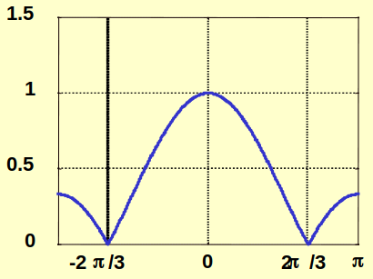

Aula 4 - Transformada de Fourier em Tempo Discreto#
Versão 2023
Essas notas de aula podem ser compartilhadas nos termos da lincença Creative Commons CC BY-NC-ND 4.0, com propósitos exclusivamente educacionais.
Attribution-NonCommercial-NoDerivatives 4.0 International
Introdução
A representação de Sistemas Lineares através de senóides ou exponenciais complexas é muito usual devido ao fato de que para estes sinais o sinal de saída é o mesmo sinal (senoidal) da entrada, com amplitude e fase determinadas ou modificadas pela resposta sistema.
Considere um sistema LTI com resposta ao impulso \(h[n]\) em cuja entrada é aplicado o sinal \(x[n] = e^{jwn}\).
Como a saída é a convolução da entrada \(e^{jwn}\) com a resposta ao impulso \(h[n]\) tem-se que:
Como o índice \(n\) não entra na somatória, então:
Definindo a função \(H(e^{jw})\) tal que:
onde \(H(e^{jw})\): é chamada de Resposta em Frequência do sistema.
Observe que \(H(e^{jw})\) é a transformada de Fourier da sequência \(h[n]\).
Para uma freqüência particular \(w_0\) tem-se:
ou seja: \(H(e^{jw})\) modifica a amplitude e fase de \(e^{jwn}\)
Principal característica de uma sinal amostrado no tempo

O conceito de resposta em frequência para sistemas contínuos e discretos no tempo é o mesmo.
Contudo, para os sistemas discretos a resposta em frequência é periódica com período \(2\pi\).
Prova:
Como \(e^{-j2\pi n} = \cos(2\pi n) - j\sin(2\pi n) = 1\), então:
Portanto \(H(e^{jw})\) é periódica com período \(2\pi\).
Representação de \(H(e^{jw})\) pelo módulo e fase:
$\(H(e^{jw}) = \underbrace{|H(e^{jw})|}_{\text{Resposta de amplitude}}\cdot \underbrace{e^{j\angle H(e^{jw})}}_{\text{Resposta de fase}}\)$
Exemplo 1: Resposta em frequência do sistema \(y(n) = x(n-n_d)\)
Aplicando o sinal \(x(n) = e^{jwn}\) tem-se:
Como \(H(e^{jw})\) é periódica com período \(2\pi\), ela sempre será expressa em um dos seguintes intervalos:
Frequências digitais entre \(-\pi\) e \(\pi\) ou entre \(-0.5\) e \(0.5\), significam que o sistema é representado pelas frequências no tempo contínuo em um dos intervalos entre \(-\Omega_a/2\) e \(\Omega_a/2\) ou \(-F_a/2\) e \(F_a/2\).

Transformada de Fourier de Sequências#
O par de transformada de Fourier de uma sequência ou sinal discreto \(x(n)\) é definido por:
Condições de validade
Para que a transformada de Fourier exista (convergência). A seguinte condição deve ser satisfeita:
Observe que:
A condição suficiente para que a transformada exista é que \(x(n)\) seja absolutamente somável, isto é:
Exemplo 2: Determine a transformada de Fourier de:
Admitindo \(|ae^{-jw}|<1\) que é equivalente a admitir \(|a|<1\)

Exemplo 3: Determine a transformada de Fourier de:

2.1. Espectro Densidade de Energia
Teorema de Parseval
A energia de uma sequência é definida como:
A quantidade: \(S_x(f) = |X(e^{jw})|^2\) representa a distribuição da Energia de \(x(n)\) em função da frequência e por isso ela é chamada de Densidade Espectral de Energia.
Interpretação da densidade espectral de energia

Exemplo 4: Para o sinal do exemplo 3
Esta definição é útil quando se trabalha com sinais aleatórios onde é definido o Espectro Densidade de Potência.
3. Propriedades da Transformada de Fourier#
3.1. Propriedades de Simetria
Sequência Complexas
\(x^\ast[n] \leftrightarrow X^\ast(e^{-jw})\)
\(Re\{x[n]\} \leftrightarrow X_e(e^{jw})\)
\(Im\{x[n]\} \leftrightarrow X_0(e^{jw})\)
\(x_e[n] \leftrightarrow X_R(e^{jw})\)
\(x_0[n] \leftrightarrow X_I(e^{jw})\)
Sequência Reais
\(X(e^{jw}) = X^\ast(e^{-jw})\)
\(X_R(e^{jw}) = X_R(e^{-jw})\)
\(X_I(e^{jw}) = -X_I(e^{-jw})\)
\(|X(e^{jw})| = |X(e^{-jw})|\)
\(\angle X(e^{jw}) = -\angle X(e^{-jw})\)
Propriedades e Teoremas Gerais
Linearidade: \(ax(n)+by(n) \leftrightarrow aX(e^{jw})+bY(e^{jw}) \)
Desl. no tempo: \(x(n-n_d) \leftrightarrow e^{-jwn_d}X(e^{jw})\)
Desl. na freq.: \(e^{-jw_0n}x(n) \leftrightarrow X(e^{j(w-w_0)})\)
Inv. do tempo: \(x(-n) \leftrightarrow X(e^{-jw})\)
Diferenciação: \(nx(n) \leftrightarrow j\frac{d}{dw}X(e^{jw})\)
Parseval:
7. Convolução:
8. Modulação:
caso: \(x(n)\cos(w_0n) \leftrightarrow \frac{1}{2}[X(e^{j(w+w_0)})+X(e^{j(w-w_0)})]\)
Exemplo 5: Determine a transformada de Fourier de:
Podemos expressar \(x(n)\) como: \(x_1(n) + x_2(n)\):
Combinando as duas transformadas (propriedade da linearidade):
Exemplo 6: Função de transferência do Filtro de média móvel:
Neste caso: \(h(n) = \frac{1}{3}\delta(n+1) + \frac{1}{3}\delta(n) + \frac{1}{3}\delta(n-1)\)
para isso usou-se a propriedade \(x[n-k] = x[n]\ast \delta[n-k]\) e que \(y[n] = h[n]\ast x[n]\)
Combinando as propriedade de linearidade, \(TF\{\delta[n]\} = 1\) e deslocamento no tempo tem-se:
